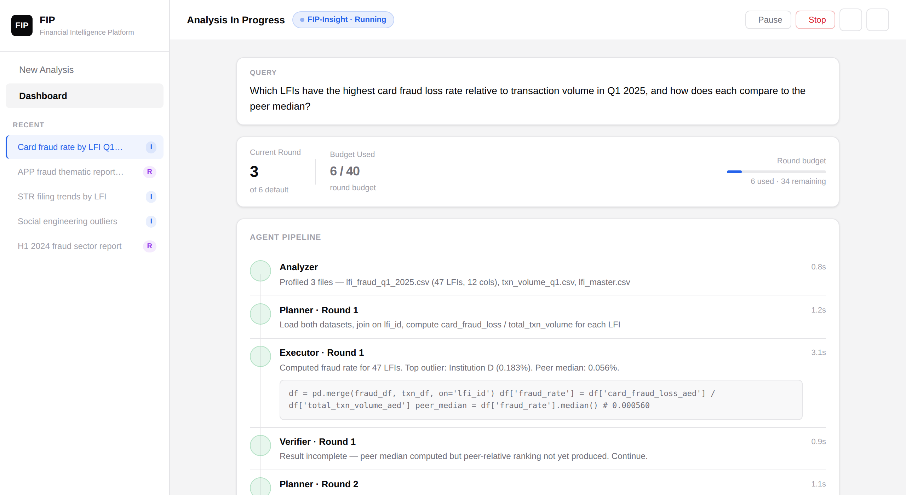

A self-directed architecture & product-design exercise — designed against a realistic, hypothetical financial-crime supervision scenario, not an actual client engagement.
1. Concept & DS-STAR Foundations
Agent-DASC is an agentic data science system built on the architecture from Google's DS-STAR paper ("DS-STAR: Data Science Agent via Iterative Planning and Verification," arXiv:2509.21825). The goal: let a non-technical analyst type a question in plain English — e.g. "Which institutions have the highest fraud loss rate relative to transaction volume this quarter?" — and get back a cited, data-backed answer, without writing Python or SQL.
Rather than a single-shot LLM query, DS-STAR runs a structured multi-agent loop that plans, codes, executes in a sandbox, verifies, and iterates — closer to how a human data scientist actually works through an ambiguous analytical question.
2. What's Actually Built vs. Designed
It's easy to make an agent framework look further along than it is. Here's the honest breakdown:
In plain terms: the core reasoning loop is real, running code with a passing test suite — not a mock. The production shell around it (security, reporting mode, UI) exists as a fully-specified design, not yet implemented.
3. Multi-Agent Pipeline Mechanics
The real implementation runs eight specialized nodes through a LangGraph state machine, each with its own prompt contract:
- Analyzer: Profiles heterogeneous input files (CSV, JSON, Excel) to extract schema, row counts, and summary statistics before any plan is written.
- Planner: Formulates a structured, multi-step execution plan from the query and the Analyzer's output.
- Coder: Translates each plan step into a complete, self-contained Python script.
- Executor: Runs the script inside the sandboxed container and captures stdout/exit code.
- Debugger: On a non-zero exit code, receives both the traceback and dataset metadata (column headers, schema) — tracebacks alone are usually insufficient for data-centric bugs — and rewrites the script.
- Router: Decides whether to retry, proceed to verification, or escalate based on round state.
- Verifier: Acts as an LLM-based judge, issuing a pass/fail verdict against the original question.
- Finalizer: Assembles the verified result and explanation returned to the analyst.

4. Architecture Decisions
A few of the tradeoffs that came up translating the paper into something deployable in a constrained, air-gapped enterprise environment:
docker exec. A fresh container per round means paying a multi-second cold start up to 20+ times per query. This is only safe because the Coder is required to emit a complete, self-contained script every round — so there's no cross-round state to leak.5. Implementation Details
Simplified for illustration — the real implementation is a LangGraph state machine (see backend/agents/graph.py in the repository), but this captures the core plan → execute → verify loop:
class DSStarAgent:
def __init__(self, database, model):
self.planner = PlannerAgent(model)
self.coder = CoderAgent(model)
self.verifier = VerifierAgent(model)
def solve_query(self, user_query):
plan = self.planner.generate_plan(user_query)
result = self.coder.execute_steps(plan)
# Iterative verification check
verdict = self.verifier.judge(result, user_query)
if verdict["status"] == "FAILED":
plan = self.planner.refine_plan(plan, verdict["reason"])
result = self.coder.execute_steps(plan)
return result6. Running It as a Real Product Lifecycle
The repository's docs/product-lifecycle branch treats this like a real pre-code process — discovery and PRD before a UX spec, a UX spec before a tech design doc — rather than jumping straight to code: